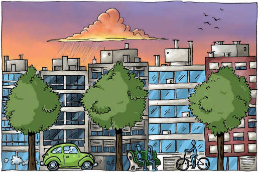

Lee esta infografía y piensa: ¿pueden los árboles ofrecer una solución a alguno de los problemas que anotaste en la página anterior?

Beneficios del Arbolado Urbano
Protege del sol y la lluvia.
Atrapa partículas contaminantes (polvo, humo, bacterias y químicos).
Da más valor a la propiedad.
Abriga al cortar el viento.
Purifica el aire, absorbe CO₂, y libera oxígeno puro.
Los árboles son la casa de muchos animales.
Reduce la contaminación sonora (ruidos).
Embellece la calle.
Cada árbol, diariamente, absorbe la contaminación generada por 100 autos.
Hace la vida más agradable.
Mejora la calidad de vida.
Reduce la temperatura urbana.
Funciona como barrera del sonido.